Das Schülerkonzert war ein Erfolg - vielen Dank an alle für's
Mitmachen!
Aus dem diesjährigen Programm...
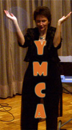
YMCA - Ammon Natalie, Grieb Manuela, Maurer Nathalie, Keller Michael
SWISS LADY - Schneeberger Eliane
ARE YOU LONESOME TONIGHT - Frutig Fabio
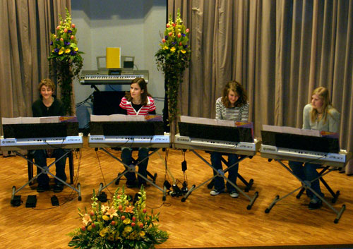
Mit viel Schwung ging's los - YMCA mit sensationellen Tanzeinlagen der Musiklehrerin persönlich!
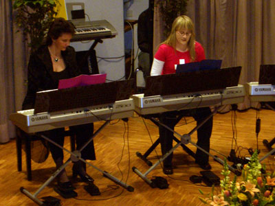
Die Swiss Ladies bekennen Farbe :-)
LIGHTLY ROW - Schlup Michel
WHEN THE SAINTS GO MARCHING IN - Cottina Mikael, Heitmann Jonin, Jordi Cédric
KIOSK - Mollet Simon
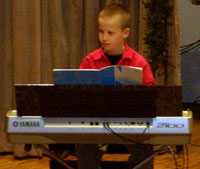 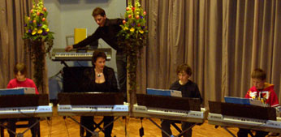
Auch die ganz Jungen finden immer wieder den Mut, ihr Können zu zeigen - toll!
INCOMPLETE - Ammon Olivia, Schild Manon, von Dach Philip
SCHNAPPI - Damyanovic Marko, Hänni Luca, Lorenz Nicola
MERRILY WE ROLL ALONG - Forti Elodie
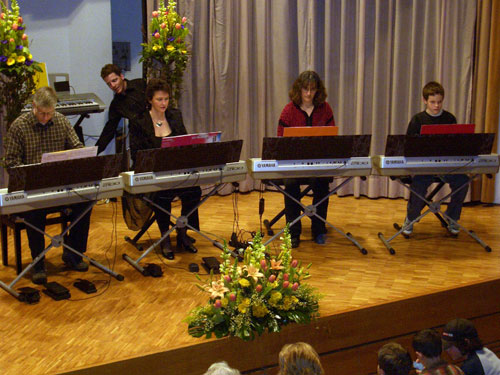
The Final Countdown nicht zum Finale, aber trotzdem eine Wucht.
Ausnahmsweise durfte Claudine Kraft als weiteres Mitglied der
Familie Weiss auftreten...
THE FINAL COUNTDOWN - Familie Weiss
WAKE ME UP WHEN SEPTEMBER ENDS - Fink Vera
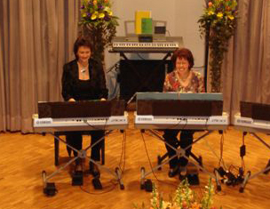
Ob die Fischer was fangen? :)
SPANISH EYES - Meister Armin
DIE FISCHER VON SAN JUAN - Jost Eveline
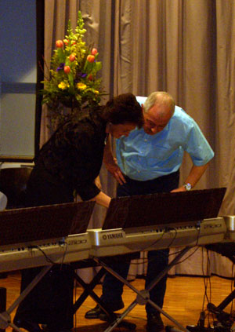
Es gibt halt auch schwierige Schüler...
aber auch die Musiklehrerinnen sind ja bekanntlich
nicht immer über alle Zweifel erhaben ;-)
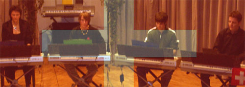
SCHWEIZERPSALM - Habegger Jan, Wyss Michael, Girard Olivier
...dabei wurden wir vom Publikum sogar kräftig unterstützt:
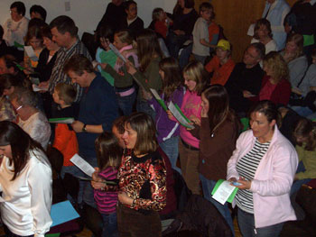
p a u s e ...für's Wohlbefinden der Gäste wurde selbstverständlich wieder vorbildlich gesorgt.
AZZURRO - Schumacher Patrick
BACH ROCK - Willi Cony
AIR - Zbinden Alice
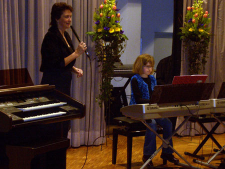
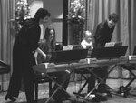
FIRST DAY OF MY LIFE - Moser Alina, Walter Sandrine
BONANZA - Gerber Cynthia, Halter Stefanie, Hofmann Philippe
THE DRUNKEN SAILOR - Schütz Ellen
STRANGERS IN THE NIGHT - Bachmann Ursula, Schneider Edith
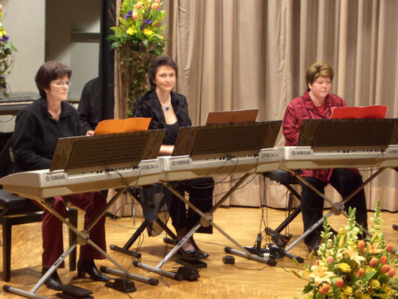
Ein wirklicher Stranger ist Edith Schneider (rechts) natürlich nicht -
sie ist bekannt für die wunderschönen Blumenarrangements, die auch in
diesem Jahr wieder die Bühne schmückten.
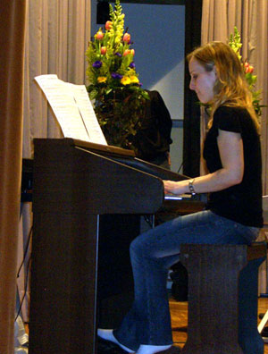
La Camisa Negra auf der elektronischen Orgel.
MORGENSTIMMUNG - Fink Vera
LA CAMISA NEGRA - Marti Corinne
MERCURY BOOGIE - Ackermann Natascha, Bühler Belinda
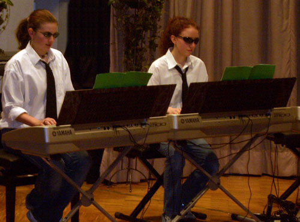
Die Boogie Sisters sorgen für Stimmung! :-)
SOMETHING STUPID - Guggisberg Anja, Lorenz Xenia, Sauter Sabine, Scheidegger Martin
WORRIED MAN BLUES - Etter Cyril
SCARAMUCCE - Grieb Manuela
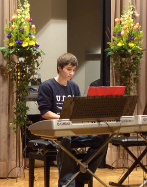
Einmal bluesig und nur Klavier - Worried Man Blues.
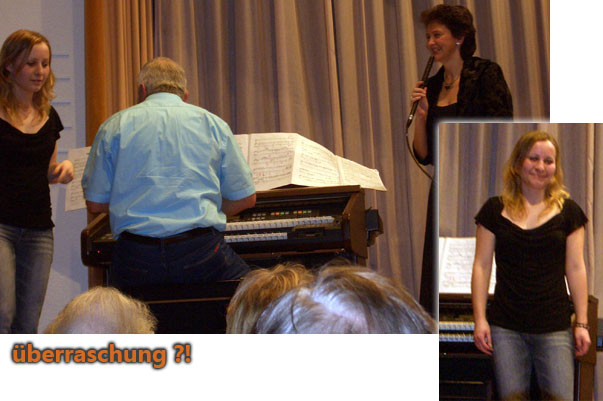
Der grosse Auftritt von Armin Meister, dem grossen Star-Organist!!
Leider hatte er seine Lesebrille vergessen und so konnte er mit den vielen Seiten
voller kleinen schwarzen Punkten nicht allzu viel anfangen ;-)
Zum grossen Entzücken des Publikums ist Corinne Marti eingesprungen und hat ihre
umwerfende Version von John Miles' Music vorgetragen...
Ein toller Abschluss eines vielfältigen, unterhaltsamen und gelungenen Abends!
|